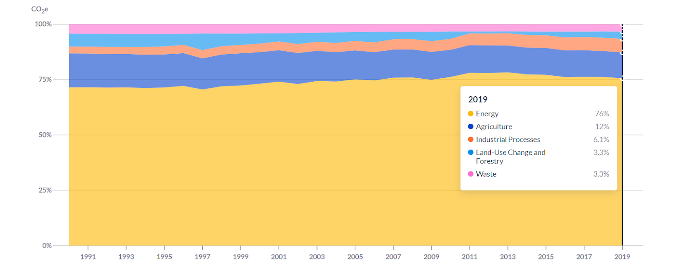
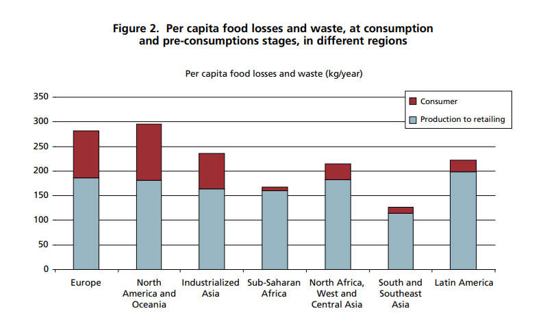

Chủ nghĩa tiêu dùng và ảnh hưởng đến biến đổi khí hậu¶
Nguồn bài viết
Thời gian gần đây vấn đề môi trường và biến đổi khí hậu là một trong những chủ đề được đề cập nhiều nhất trên các phương tiện truyền thông. Rất nhiều những giải pháp được đưa ra như là năng lượng tái tạo hay công nghệ thu giữ carbon để giảm thiểu sự ảnh hưởng của biến đổi khí hậu… Tuy nhiến nhiều ý kiến cho rằng biến đổi khí hậu xuất phát từ cách con người sử dụng tài nguyên thiên nhiên và và do đó cách giải quyết vấn đề này nên xuất phát từ việc là dịch chuyển thói quen tiêu dùng và sản xuất sang một phương thức bền vững hơn. Trong bài viết này, hãy cùng nhìn lại về quá trình hình thành và tìm hiểu chủ nghĩa tiêu dùng đang gây tác hại xấu đến môi trường như thế nào.
Chủ nghĩa tiêu dùng xuất hiện từ khoảng thế kỉ 17-18 với sự bùng nổ của tầng lớp trung lưu. Đối với chủ nghĩa tiêu dùng, sự tăng trưởng của sức tiêu thụ hàng hóa luôn là mục tiêu tối quan trọng và do đó, đặt trong bối cảnh kinh tế, chủ nghĩa tiêu dùng được xem như phương thức tích cực để kích thích sự phát triển kinh tế. Tuy nhiên, cũng trong chủ nghĩa tiêu dùng, hạnh phúc của người tiêu dùng được gắn liền với lượng tài sản sở hữu và mức độ tiêu thụ và do đó thúc đẩy khách hàng tiêu thụ nhiều sản phẩm nhằm đạt được hạnh phúc. Do đó, đặt trong bối cảnh xã hội, văn hoá, chủ nghĩa tiêu thụ thường mang ý nghĩa tiêu cực, gây ảnh hưởng đến các giá trị truyền thống và tạo ra các gánh nặng lên môi trường.
Mặc dù đã xuất hiện từ cách đây khá lâu, chủ nghĩa tiêu dùng chỉ thực sự cất cánh từ sau thế chiến thứ 2. Sau chiến trành, Mỹ trở thành một cường quốc về kinh tế, nền công nghiệp, nhà máy được thừa hưởng từ những tiến bộ mạnh mẽ trong chiến tranh đã khiến sức sản xuất trở lên vượt bậc. Người dân cũng được hưởng lợi từ những khoản trái phiếu trong chiến tranh và cùng với đó khả năng tiêu thụ của người dân tăng cao và đời sống đi lên. Ví dụ, vào năm 1942, chỉ có 5000 chiếc TV được bán ra nhưng chỉ trong 1 năm sau đó khi nước Mỹ tham chiến, 44 000 chiếc đã được đến tay các hộ gia đình và trước năm 1948, con số này tăng lên 2,000,000 chiếc. Xu hướng này không chỉ dừng lại ở Mỹ mà còn trở lên phổ biến hơn ở các quốc gia khác do quá trình toàn cầu hóa và những chính sách kích cầu để phục hồi nền kinh tế sau chiến tranh. Từ đó đến nay, không chỉ ở các quốc gia đã phát triển mà ở các nước đang phát triển xu thế này cũng trở nên phổ biến. Năm 2004, có khoảng 1.7 tỉ người thuộc về tầng lớp tiêu thụ; được xác định bởi thói quen tiêu dùng như sử dụng thực phẩm chế biến có sẵn, mong muốn có một ngôi nhà to hơn, nhiều xe đẹp và đắt tiền hơn, sẵn sàng chấp nhận nhiều nợ tín dụng hơn, … , và cuối cùng là sở hữu nhiều loại vật dụng không thiết yếu. Tất nhiên là chẳng có gì xấu khi mà chúng ta tạo ra của cải và tiêu thụ chúng, đó hầu như là động lực thúc đẩy chúng ta đi làm mỗi buổi sáng. Tuy nhiên chúng ta thực sự cần phải tiêu thụ nhiều như vậy không?
Ảnh hưởng của chủ nghĩa tiêu thụ lên trái đất¶

Chủ nghĩa tiêu dùng đang phá hoại trái đất [source: Angry Earth]
Khi mà nền văn minh nhân loại vẫn còn gắn với trái đất, thì số lượng hàng hóa được sản xuất bị giới hạn bởi tài nguyên mà trái đất có thể cung cấp. Trong hàng triệu năm tiến hóa của nhân loại, chúng ta là thế hệ đầu tiên chứng kiến thời điểm mà lượng tài nguyên trái đất tạo ra hàng năm không đáp ứng đủ nhu cầu sản xuất của con người. Thực vậy, ngày Trái đất quá tải (Earth overshoot day) được tính là ngày mà con người sử dụng hết tài nguyên mà trái đất có thể tái tạo trong một năm. Năm 1971, ngày overshoot đầu tiên rơi vào 25 tháng 12 và sau 50 năm, năm 2021, ngày này rơi vào 29 tháng 7. Với tốc độ tiêu thụ như hiện tại, chúng ta cần tới 1,6 Trái Đất để duy trì lối sống của mình. Do đó, nếu chúng ta tiếp tục duy trì thoái quen sản xuất và sinh hoạt như cách mà chúng ta đã làm từ thế kỉ trước thì chúng ta sẽ không thể để lại gì cho thế hệ sau ngoài một trái đất thiếu sức sống.

Ngày trái đất quá tải [Earth overshoot day]
Điều này có ảnh hưởng gì đến biến đổi khí hậu?¶
Rõ ràng là, trong một nền kinh tế mà dầu mỏ, khí đốt chính là xương sống, việc sản xuất một lượng lớn hàng hóa tương đương với sự phát thải nhiều khí carbon. Điều này là bởi carbon xuất hiện ở hầu hết các lĩnh vực công nghiệp. Để dễ hình dung, hãy cùng nhìn vào vấn đề năng lượng. Để một nền kinh tế có thể vận hành được, năng lượng là vô cùng thiết yếu. Tuy nhiên, cho đến hiện tại phần lớn nguồn năng lượng được sản xuất bắt nguồn từ nguyên liệu hóa thạch mà khi đốt sẽ thải ra khí carbon dioxide. Ước tính vào năm 2019, có tới 76% lượng khí nhà kính xuất phát từ lĩnh vực năng lượng. Chúng ta cần năng lượng để sản xuất hàng hóa, đồng thời cũng cần năng lượng để vận chuyển chúng đến tay người tiêu dùng. Việc chúng ta tiêu thụ những mặt hàng không cần thiết đã thực sự tạo ra động lực thúc đẩy sản xuất hàng loạt và luân chuyển hoàng hóa từ khắp các nơi trên thế giới, tạo ra một nền kinh tế phát thải carbon. Một ví dụ điển hình đó chính là thời trang nhanh (fast fashion). Đây là một xu hướng thời trang đã bắt đầu ở châu Âu từ sau thế chiến thứ 2 và đã thực sự đã gây ra ảnh hưởng xấu đối với môi trường trong suốt thế kỉ vừa rồi và cho đến tận ngày nay. Nhìn vào quá trình sản xuất các mặt hàng thời trang, phần lớn các sản phầm may mặc đều được làm từ các sợi tổng hợp, được sản xuất chủ yếu từ việc khai thác và gia công từ dầu thô. Ước tính việc sản xuất một chiếc áo t-shirt làm từ polyester tương đương với phát thải ra 5.5kg khí CO2[mat]. Tất nhiên là ta có thể chuyển sang sử dụng các sợi tự nhiên như cotton (sợi phổ biến thứ hai để gia công các sản phẩm may mặc và có lượng khí phát thải bằng khoảng ¾ so với sợi polyester) tuy nhiên điều này cũng gây ra tác hại to lớn với môi trường bởi vì cotton tiêu thụ một lượng lớn nước và thuốc trừ sâu (ngành công nghiệp sản xuất thuốc trừ sâu còn thải ra môi trường một lượng lớn khí NOx, cũng là một loại khí nhà kính cực mạnh) trong quá trình phát triển. Tính trung bình hằng năm, ngành thời trang đóng góp tới 4%-10% lượng phát thải của toàn thế giới. Fast fashion càng làm trầm trọng thêm vấn đề bởi tính linh hoạt của nó [fashion]. Rất nhiều nhãn hàng đề xuất các mẫu thiết kế mới hàng tháng tới hàng tuần đề có thể thu hút khách hàng và gia tăng doanh số và do đó, càng nhiều mặt hàng được tiêu thụ hơn. Năm 2000, 50 tỉ sản phẩm may mặc được sản xuất thì 20 năm sau, con số này đã tăng hơn 60% [fast fashion]. Fast fashion ngày càng trở nên dễ dàng hơn nhiều bởi online shopping và các phương tiện vận chuyển hàng hóa đến tay người tiêu dùng. Do đó, nếu như chúng ta tiếp tục thói quen tiêu dùng các mặt hàng thời trang như hiện tại thì đó sẽ trở nên vô cùng độc hại cho môi trường.

Phân bố nguồn sản xuất điện năng năm 2019
Không chỉ thời trang, thói quen ăn uống thừa thãi cũng để lại một gánh nặng lên môi trường. Trong cuộc sống hiện đại, con người càng trở lên giàu có thì họ có xu hướng lãng phí nhiều hơn. Trên thực tế, ở các nước phát triển, hơn 40% thất thoát và lãng phí thực phẩm nằm ở khâu bán lẻ và tiêu dùng. Chúng ta thường có thói quen tiêu thụ nhiều hơn nhu cầu thực tế do tâm lý sợ thiếu và nếu như các sản phẩm không dùng có thể bỏ vào thùng rác. Tuy nhiên, dưới góc độ vĩ mô, vấn đề mới thực sự phát sinh khi rác rời khỏi nhà chúng ta, ví dụ như việc vận chuyển rác thải đến các trung tâm xử lý hay việc phân loại và xử lý những loại rác thải khác nhau. Đối với các quốc gia chưa có quy định rõ ràng hoặc chưa có cơ sở xử lý và phân loại rác thải hợp lý, phần lớn lượng rác thải đều bị xả ra ở các bãi rác. Rác không được xử lý cẩn thận có thể gây ra ô nhiễm nguồn nước và không khí. Trong một số trường hợp như các loại thực phẩm hữu cơ, đây có thể là một nguồn phát thải khí nhà kính rất lớn.

Tình trạng lãng phí thực phẩm ở cách nước trên thế giới [food]
Kết luận¶
Phía trên chỉ là 2 ví dụ về ảnh hưởng của chủ nghĩa tiêu dùng lên Trái đất và biến đổi khí hậu. Nhìn một cách tích cực, chủ nghĩa tiêu thụ xuất phát từ việc kinh tế, khoa học và công nghệ phát triển dẫn đến giá thành các loại sản phẩm hạ xuống và việc tiếp cận các loại mặt hàng nói chung trở nên dễ dàng hơn. Tuy nhiên, cơ chế định giá của chúng ta hiện tại chưa hề tính đến chi phí của các thảm họa môi trường có thể diễn ra sau này. Do đó, mỗi khi đứng trước một quyết định mua sắm một sản phẩm, hãy tự xem xét xem liệu chúng có cần thiết không và liệu có giải pháp thay thế nào bền vững không. Đó là một cách để chúng ta có thể phát triển một cách bền vững và để lại một tương lai tươi sáng cho thế hệ tiếp theo.